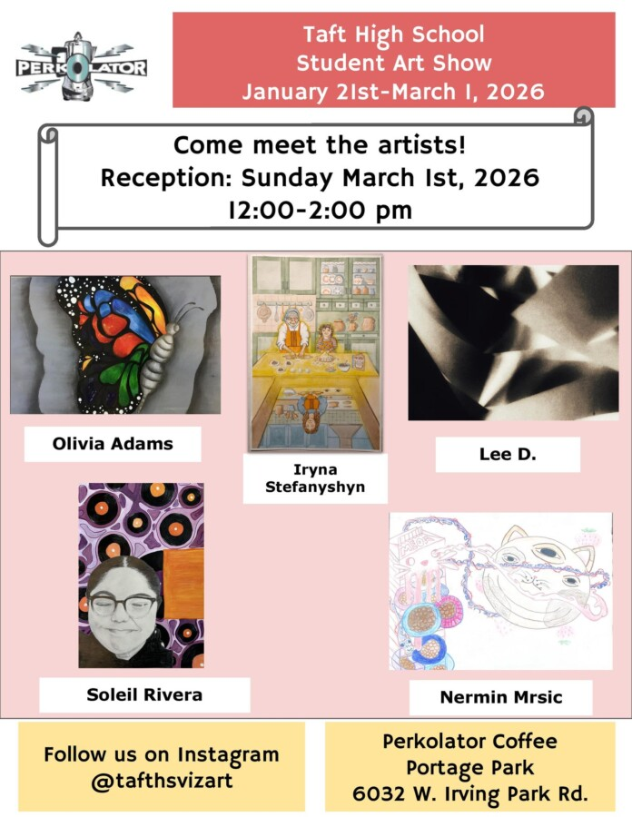

Meet the Artists
Taft High School students show off their talent.
We are impressed by the quality of students’ work and are honored to share it with the community. The show is currently on the walls and can be viewed through Sunday, March 1st.
The artists will be here on Sunday, March 1st, from 12 to 2pm. Come and get out of the cold, grab a beverage or a treat, and meet the artists.
Perkolator Café & Roastery, 6032 W Irving Park Rd, Chicago.